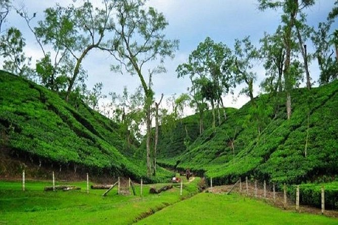
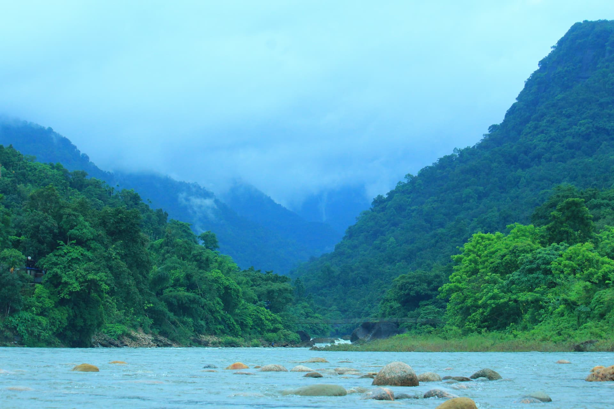

Sylhet is a metropolitan city in the north eastern region of Bangladesh. It serves as the administrative centre for both the Sylhet District and the Sylhet division.
Tourists visit Sylhet because it is the "Land of Tea, Hills, and Rivers," offering a spectacular blend of lush tea gardens, crystal-clear rivers, and unique wetland ecosystems. It serves as a prime escape for nature lovers, adventure seekers, and those looking to explore the region's rich cultural and spiritual heritage.


If you are interested to know more about Sylhet, you may visit the link below.